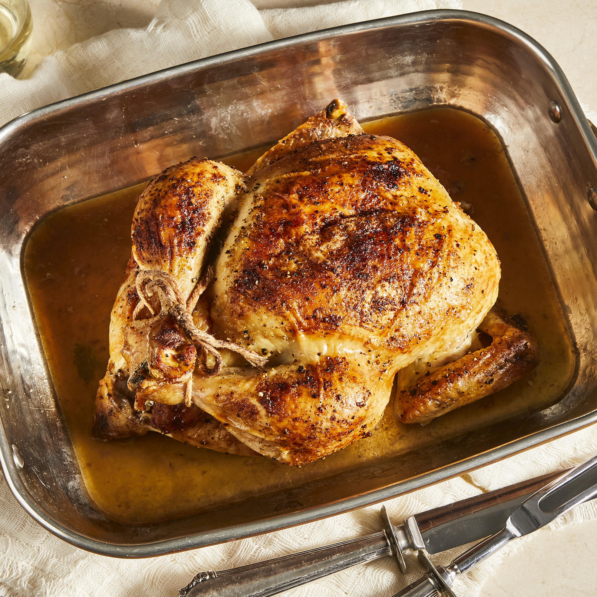

Roasted Chicken

Roasted Chicken
The juiciest roasted chicken recipie
Ingredients
- 1 (3 pound) Whole Chicken, Giblets Removed
- Salt and Black Pepper To Taste
- 1 tablespoon Onion Powder, or to Taste
- 1/2 cup Margraine, Divided
- 1 stalk Celery, Leaves Removed
Direction
- Preheat oven to 350 degrees F (175 degrees C).
- Place chicken in a roasting pan, and season generously inside and out with salt and pepper. Sprinkle inside and out with onion powder. Place 3 tablespoons margarine in the chicken cavity. Arrange dollops of the remaining margarine around the chicken's exterior. Cut the celery into 3 or 4 pieces, and place in the chicken cavity.
- Bake chicken uncovered in the preheated oven until no longer pink at the bone and the juices run clear, about 1 hour and 15 minutes. An instant-read thermometer inserted into the thickest part of the thigh, near the bone, should read 180 degrees F (82 degrees C). Remove from heat and baste with melted margarine and drippings. Cover with aluminum foil and allow to rest about 30 minutes before serving.
Return To Homepage